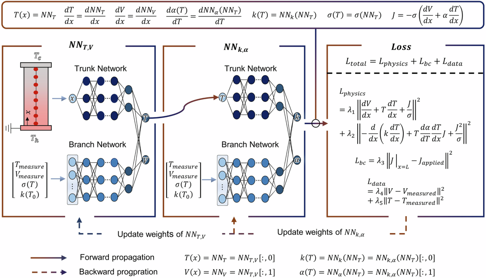
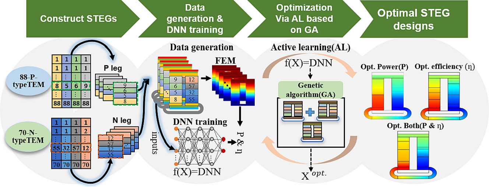
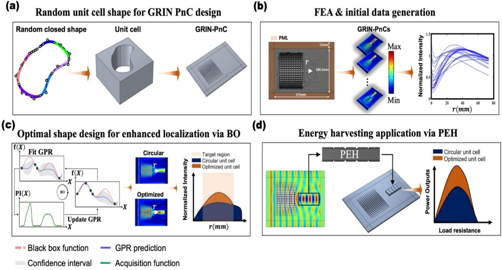

Distinguished Postdoctoral Fellow · University of Wyoming
Building the Next Generation of Autonomous Research Systems Driven by Physics-Aware AI
I use AI frameworks that embed physical laws into machine learning architectures — enabling reliable, data-efficient discovery of new materials and engineering solutions for sustainable energy.
I am a Ph.D. graduate in Mechanical Engineering from KAIST, currently a Distinguished Postdoctoral Fellow in the Department of Chemistry at the University of Wyoming.
My research interests focus on the Physics-Aware AI paradigm — integrating fundamental physical laws with advanced machine learning to create frameworks that are both rigorous and data-efficient. My ultimate goal is to democratize autonomous computational tools for the broader scientific community.
I am actively pursuing a Tenure-Track Assistant Professor position in Applied AI & Machine Learning, where I aim to build a research group and train the next generation of engineers who are fluent in both classical physics and modern ML.
Structured around four core questions that define the frontiers of computational science and autonomous discovery.

Embedding physical laws directly into AI architectures to ensure robustness in data-scarce simulation or experimental regimes. Demonstrated in npj Computational Materials (2025) — achieving zero-shot generalization across unseen materials without retraining, featured on Phys.org.

AI-driven optimization frameworks to search astronomical design landscapes. Screened 1.4 × 10¹⁴ material combinations for Segmented Thermoelectric Generators, achieving 1.91× power density and 1.5× conversion efficiency over benchmarks. Published in Applied Energy (2024).

Optimizing complex engineering problems where data is expensive or scarce. Improved wave localization intensity by 36% and power generation by 1.5× using only 5.9% of the data required by typical DNN methods. Published in IJSS (2026).
Building autonomous multi-agent LLM frameworks that plan, execute, and self-correct atomistic transport simulations (DFTB) on HPC clusters — reducing expert setup time from days to minutes. Coupled with crystal graph convolutional neural networks for rapid prediction of electronic transport in metal-organic frameworks (MOFs). Current focus at University of Wyoming.
Peer-reviewed journal publications in high-impact venues.
Renewable and Sustainable Energy Reviews (accepted, 2026) · †Equal contribution ∗Corresponding author
International Journal of Solids and Structures, 113871 (2026)
npj Computational Materials, 11(1), 272 (2025) · Featured on Phys.org
Journal of Applied Physics, 137(11), 115001 (2025)
arXiv preprint arXiv:2510.16723 (2025)
Applied Energy, 355, 122216 (2024)
Extreme Mechanics Letters, 65, 102098 (2023)
Energy Reports, 8, 6633–6644 (2022)
International Journal of Thermal Sciences, 165, 106918 (2021)
International and domestic conference talks and posters.
Gordon Research Conference on Computational Materials Science and Engineering · Newry, ME, USA
MRS Spring Meeting 2023 · Materials Research Society
KSME Spring/Autumn Conference, 2024
KSME Spring/Autumn Conference, 2023
KSME Spring/Autumn Conference, 2022
KSME Spring/Autumn Conference, 2021
KSME Spring/Autumn Conference, 2020
Producing engineers who are "bilingual" — equally fluent in classical physics and modern machine learning.
Beginning with derivations of governing equations, then transitioning to hands-on sessions in tools like COMSOL. Students see how theoretical assumptions manifest in numerical solutions.
Project-based learning where students troubleshoot why simulations diverge — building critical skepticism required for professional engineering practice.
"Verification Labs" where students generate code with AI assistants then perform manual physics checks. Training engineers to treat AI as a collaborator, not an infallible authority.
Tiered learning resources, dedicated office hours for foundational math and coding, and diverse case studies ensuring every student — regardless of computational background — can contribute.
Open to faculty positions, collaborations, and research discussions.